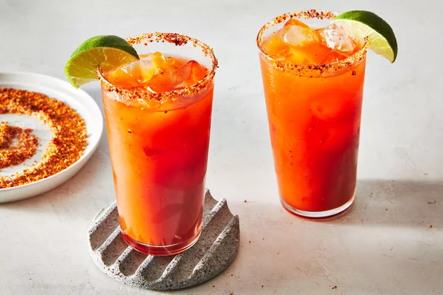

Michelada

This spicy, savory, tangy, amazingly refreshing beer-based cocktail is considered one of the best hot-weather, adult beverages ever. I've heard it described as 'Bloody Mary meets Mimosa,' which makes me never want to go to brunch again, but it's also kind of accurate. You can use tomato juice or make your own using fresh cherry tomatoes.
Ingredients
- ½ teaspoon flake sea salt (such as Maldon®)
- 1 pinch freshly ground black pepper
- 1 pinch dried red chile pepper
- 1 lime, halved
- ice cubes
- ½ teaspoon Worcestershire sauce
- ½ teaspoon hot pepper sauce
- ⅛ teaspoon soy sauce
- 1/4 cup homemade vegetable juice
- ½ (12 fluid ounce) bottle ice-cold Mexican lager
Steps
- Place cherry tomatoes, celery, and red bell pepper into a blender. Pulse a few times to get mixture moving. Blend on high until mixture has liquefied, a few more seconds. Place strainer over a bowl and strain mixture to remove seeds and skins. Push mixture through strainer with a spatula to extract the liquid. Season with salt and pepper.
- Sprinkle flake salt, black pepper, and chili pepper on a small plate. Rub rim of a glass with cut surface of a lime. Invert glass and dip rim into salt mixture.
- Fill glass with ice and add Worcestershire sauce, hot sauce, and soy sauce. Pour in the vegetable juice and juice of 1/2 lime. Fill the glass 3/4 of the way with ice-cold beer. Stir. Top off with more beer. Garnish with lime slice.
Home